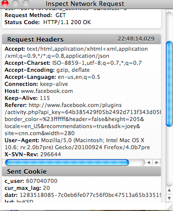

Firefox 4 Web Console Completion Status
kdangoor, December 15, 2010
Overview
The Web Console feature in Firefox 4 is an important tool for developers. This document is intended to make it easy to understand the work that remains for the Web Console.
The current draft documentation for the Web Console feature is up on MDC.
If you find any errors in this document, please email me or fork this project on GitHub.
Make sure you're working in the gh-pages branch.
The numerical picture of Web Console bugs:
| Total bugs in plan for Firefox 4 | |
| Blockers (in the total) | |
| Blocker nominations | |
| Bugs that are not yet started | |
| Ready to commit! | |
| Needs approval | |
| Up for review | |
| Has a patch | |
| Fixed by other bugs | |
Bug key:
- Blocker without patches
- Ready to commit
- Progressing
- Other bug without patches
UI Polish
The Web Console is useful today, but visual changes will go a long way toward making the Web Console look great and be even more usable.

Work-in-progress screenshot, 10/29

Network Inspector, 10/1

Network Inspector with bug 603625 patch applied
The toolbar reformatting is particularly important, because it makes the filtering a lot more usable.
Open UI polish bugs:
- bug 605621 Web Console output box should be reskinned (ready to commit code, CSS needs review, 12/14)
- bug 588379 Errors in the Web Console should link to the source file (waiting on bug 605621)
- bug 603005 HUDService should avoid the use of DOM mutation event listeners (waiting on bug 605621)
- bug 604618 Area outside the network traffic messages should not trigger the "Inspect Network Request" window on mouse click event (waiting on bug 605621)
- bug 601196 Console styling busted by personas (fixed by bug 605621, 12/13)
- bug 592309 Web Console should use <description> elements instead of <label> elements for its output
- bug 603625 Network panel heading realignment (has feedback, needs to move to review)
- bug 598357 change command line output to be easier to understand (ready to commit as of 12/10)
- bug 609372 better icons for the web console (expected somewhere around 12/22)
- bug 611440 Smart abbreviation for URLs in the Web Console (this would be awesome!)
- bug 611795 Repeated messages in the Web Console should be collapsed into one
- bug 612252 "clear console" needs a keyboard shortcut in a bad way
- bug 612253 Need a shortcut key to focus the input line in web console
- bug 613925 Console shrinks tab's thumbnail height in win7 taskbar
.
- bug 613642 Web Console is hard to use with polling XMLHttpRequests (up for review on 12/14)
- bug 614784 Themes are breaking web console's UI
- bug 615791 Web console doesn't support high contrast mode on Windows (waiting on 605621)
- bug 615805 Resizing Inspect Network Request window causes window to move (new on 11/30)
- bug 618889 Web Console doesn't animate away when you click the close button (ready for commit, 12/14)
- bug 618322 Inspect pop-up should have scroll bars and be wider
- bug 618413 Web Console shows garbled IDN address of a file with an exception (when using Privoxy)
Logging Functionality
There are two big areas in which we are improving message logging. This improved logging will also help Firebug.
- Many more messages will be associated directly with the window/tab for which they are relevant. The Web Console and Firebug have been using heuristics to join messages with their windows for these to date, rather than explicit data. The end result for the user will be a much better experience in finding errors in their code.
- The lazy console service will allow logging of messages before the console is opened. Specifically, any messages sent to the console API (console.log, for example) or any CSS and JavaScript errors will be cached for display when the user opens the Web Console. Network traffic logging will not be cached before the console is opened.
Open logging functionality bugs:
- bug 612658 Implement ConsoleStorageService (waiting on new patch since 12/12)
- bug 611032 Break out HUDConsoleObserver from HUDService
- bug 609890 display cached console messages when the user opens the console (waiting on new patch since 12/8)
- bug 616318 Cache all messages that are logged after UI is shown
- bug 606498 log messages with associated window using nsiScriptError2 (r- on 12/7)
- bug 603750 nsWebSocket connection failure messages do not show in the Web Console (waiting on 606498 to land)
- bug 603706 Need a way to track the originating window for all nsIConsoleMessages (waiting on bug 611789?)
- bug 611789 Web Console cleanup: Remove the window registry (has feedback+, waiting on new feedback 12/9, needs window ID bugs to land)
- bug 594523 When tab location changes, the HUDService fails to clear/update state information
- bug 595223 log loading from file:// urls (might be superseded by bug 594523? asked for status on 12/1)
- 616586 Internal console logging API for use in JSMs and Components
- 616742 citytv website breaks with the way it accesses the console
- bug 618334 normal GET requests should show up under Net/Log, not Net/Error
JavaScript Console
These are improvements we want to make to the JavaScript command line:
- bug 614586 Implement string substitution in all console API methods
- bug 618344 Web Console pprint() command should display something useful for functions
Other bugs
Yep, there are some other random things we're fixing up as well.
- bug 599725 Web Console reports data the server did not send (304 not modified) - shows headers from the cache, not headers from the server (new patch on 12/1, awaiting feedback)
- bug 601126 Time elapsed in console log doesn't always match time in net request inspector (waiting on doc)
- bug 598438 window.console and window.onerror fail to work in iframes on first Web Console open (looks to be test only, 12/1)
- bug 602572 Log request and response bodies checkbox issues in Web Console (final blocker, needs review since 11/17)
- bug 606055 Memory leaks on google.com with the Web Console open (might be fixed by bug 599725. needs to be checked. 12/2)
- bug 613364 javascript strict errors do not use the property when creating a log message (no action since 11/18)
- bug 613280 Cannot copy result text in console (f+ on 11/29, needs review set)
- bug 609744 Make the web console control-e terminal keybinding play nicely with Panorama (not assigned, no action since 11/04)
- bug 614802 Entering heavy content(text) in command line breaks the web console
- bug 614793 Web console window should automatically scroll to display results (waiting on 613642)
- bug 615408 Web Console gets stuck at 0px height w/ border and keyboard shortcut breaks
- bug 617322 Enlarge the selection area of text in the web console
- bug 618311 network request window stays open when switching to private browsing (data leak)
Error Console
Our old friend the Error Console is being hidden away, since most web developers will get everything they need out of the Web Console. We have a little bit of work left to do to hide the error console.
- bug 593540 Don't display content errors in the Error Console (has patches with test, some reviewed on 11/30)
- bug 602006 disable Error Console again once Web Console improvements land (ready to check in, 11/30)
Cleanup/Tests
We have some bugs that are not functionality-related but are important bits of cleanup.
- bug 592469 Web Console cleanup: kill getHeadsUpDisplay()
- bug 603001 .hud-filtered-by-type .hud-filtered-by-string style rules belong in content
- bug 594741 Web Console stress test
- bug 605351 fix and re-enable browser_webconsole_bug_593003_iframe_wrong_hud.js
- bug 607325 Test browser_webconsole_bug_594477_clickable_output.js always fails for me
- bug 609723 Assertion in browser_webconsole_bug_597103_deactivateHUDForContext_unfocused_window.js
- bug 609718 Assertion in browser_webconsole_chrome.js
- bug 610953 hudservice head.js should not declare variables or call waitForFinish
- bug 605634 Opening two Web Consoles on the same URI causes errors (waiting since 10/20 for review)